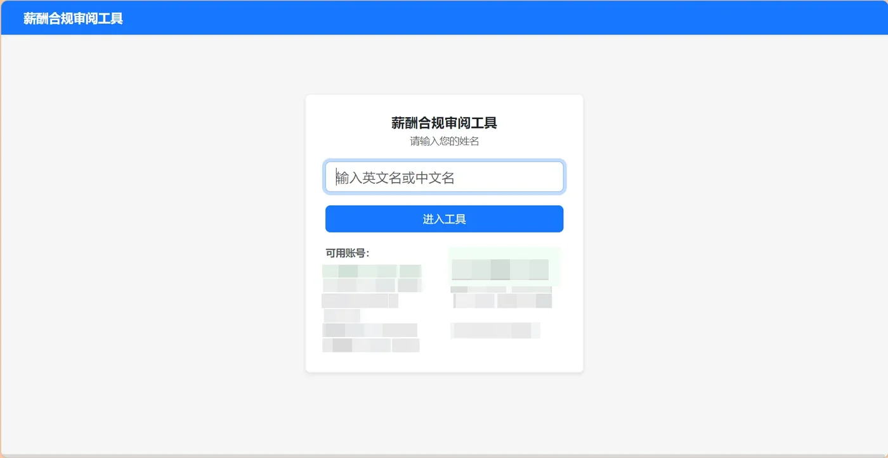
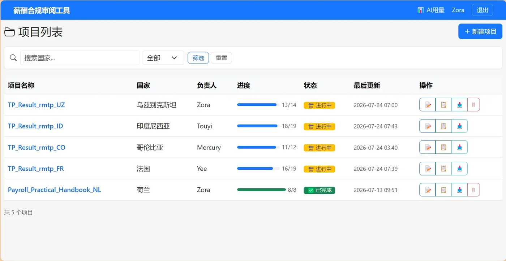
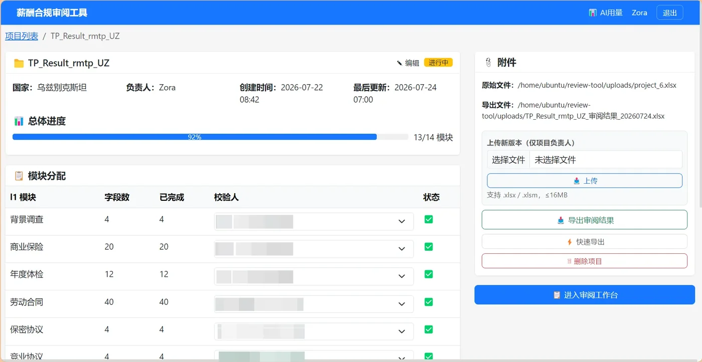
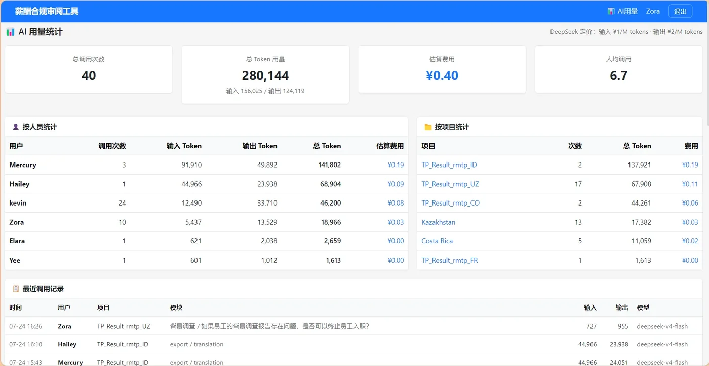

← 返回作品集列表

薪酬合规审阅工具
2026.06 – 2026.07·
AI与数据应用
Flask · Bootstrap 5 · Quill.js · DeepSeek · SQLite
项目背景
跨国企业需要对各国薪酬合规规则进行逐条审阅、交叉验证和标注。传统 Excel 传阅方式效率低、版本混乱、AI 辅助能力弱。本工具为 8 人团队打造了从上传到导出的完整审阅工作流。
核心功能
- 三格式 Excel 兼容 — 自动识别 v1/v2/v3 三种 Excel 格式（13 列 / 7 列 / 10 列），支持官方、行业通用、内部口径等多对照对结构。
- 审阅工作台 — 三栏布局：左侧模块树导航 + 中间内容编辑区（Quill 富文本）+ 右侧 AI Prompt 面板。支持快捷键切换状态（1/2/3/4）、颜色标注（红=修改/绿=增加/蓝=无源）、链接管理。
- AI Prompt 面板 — 自动生成结构化核对 Prompt（9 条规则 + 输出模板 + 待核对内容），一键复制到豆包/DeepSeek 交叉验证。支持发送 API 调用（可选），完整用量统计与费用估算。
- 审阅结果导出 — 中英双语 Excel 导出，仅翻译有审阅标记的字段（Quill 自动标签不误判），翻译失败黄色背景回退。支持快速导出（纯中文）和完整导出（含翻译）两种模式。
- 项目与用户管理 — 多项目并行，模块分配、状态追踪、URL 分享。用户从 Excel 读取，无需注册。项目软删除可恢复。
技术架构
| 后端 | Flask + SQLAlchemy + SQLite |
| 前端 | Bootstrap 5 + 原生 JS（无框架） |
| 编辑器 | Quill.js 1.3.6（富文本审阅标注） |
| Excel 引擎 | openpyxl（读写 + 导出） |
| AI | DeepSeek API（通过腾讯网关代理） |
| 部署 | 腾讯云 Ubuntu + Waitress 16 线程 + systemd 守护 |
界面截图

项目登录 — 用户从 Excel 读取，无需注册

项目列表 — 多项目并行管理

项目详情 — 模块分配、导出、编辑
审阅工作台 — 三栏布局，Quill 编辑 + 状态标注

AI 用量统计 — 按人员/项目维度汇总
量化成果
- ✅ 支持 3 种 Excel 格式自动识别，覆盖 v1/v2/v3 不同对照对结构
- ✅ 8 人团队实际使用，Waitress 16 线程生产级部署
- ✅ 20+ 个问题修复：布局适配、导出线程安全、翻译差异逻辑、链接管理、树状态指示等
- ✅ 中英双语导出，HTML 占位符保护技术确保富文本标记翻译不乱